Face Morphing
CS 194 - Project 5 - Kuriakose Sony Theakanath
Overview
The goal of this assignment is to implement the much coveted "Face Morphing" algorithm. A morph is a simultaneous warp of the image shape and a cross-dissolve of the image colors. The warp is controlled by defining a correspondence between the two pictures. The correspondence should map eyes to eyes, mouth to mouth, chin to chin, ears to ears, etc., to get the smoothest transformations possible.
Now let's look at some results!
Now let's look at some results!
How the Algorithm Works
In order to use this algorithm, there were several steps taken. The first step is to define the corresponding points between the two images by hand. This means selecting the defining features of each of the faces and matching it up with the second picture. A Delaunay triangulation is used in order to create "triangles", from the points selected.
The second part of of computing the morph is computing the mid-way face of the images. This involves computing the average shape, and then warping the two faces into the shape, and then finally averaging the colors together. In order to do this we use a affine warp for every single triangle, thus moving it to the new shape.
The third part for this is to do the morph sequence which requires a warp between the first image and the second image using the point correspondences defined in the previous step.
And finally we have our morphed image! Lots of fun (and clicking)!
The second part of of computing the morph is computing the mid-way face of the images. This involves computing the average shape, and then warping the two faces into the shape, and then finally averaging the colors together. In order to do this we use a affine warp for every single triangle, thus moving it to the new shape.
The third part for this is to do the morph sequence which requires a warp between the first image and the second image using the point correspondences defined in the previous step.
And finally we have our morphed image! Lots of fun (and clicking)!
Sony and Nik
Sony Theakanath - Original
 Nik Mathur - Original
Mathuriakose - Mid-way face
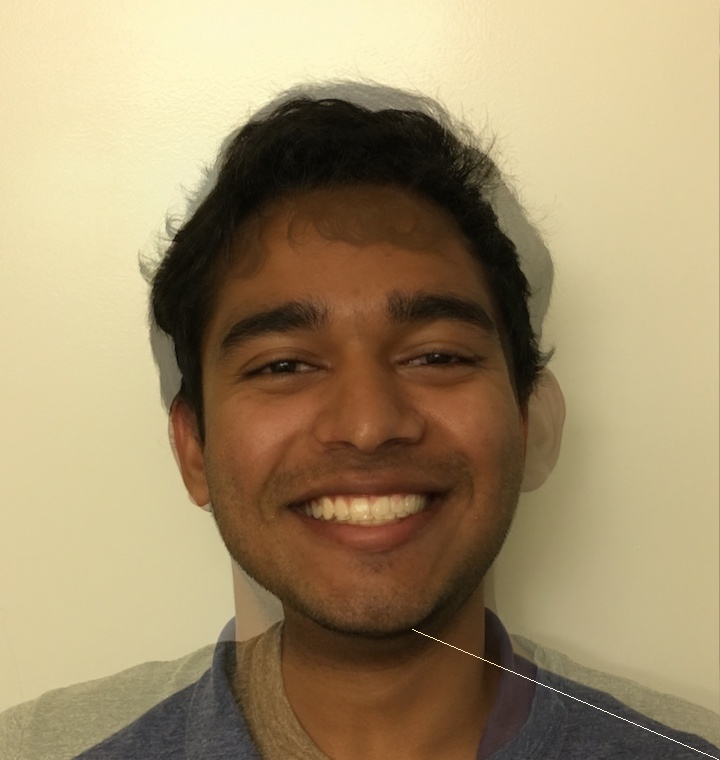
Mathuriakose - Morph Sequence
Nik Mathur - Original
Mathuriakose - Mid-way face
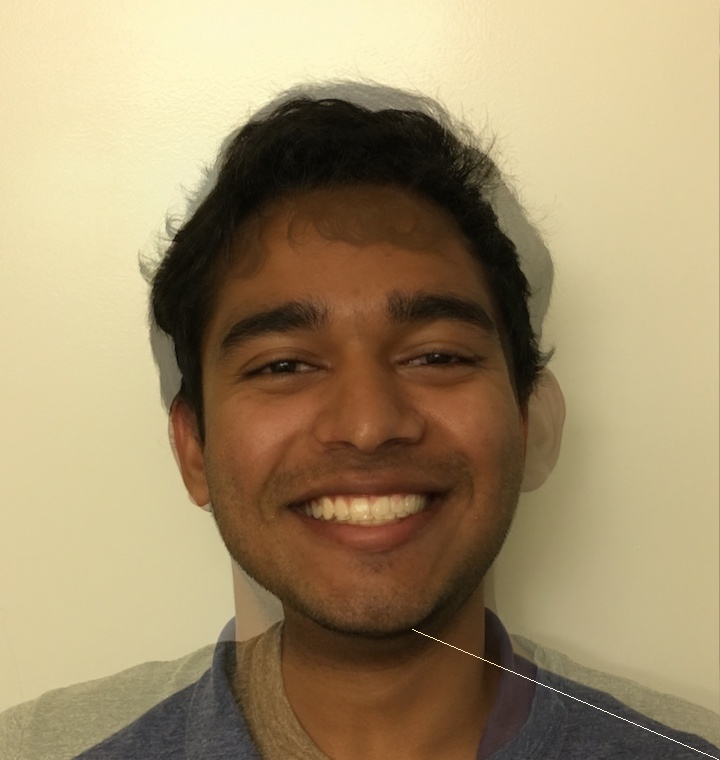
Mathuriakose - Morph Sequence
As seen here, all of these turned out pretty well! One odd part was Nik's neck, which was significantly wider than mine. Because his was bigger, it looked odd during the morph since there is a lot of space to cover in between for the morph. Another issue was the triangulation, which caused a line on the bottom right. Otherwise, the morph turned out pretty well!
Nik Mathur - Original
Mathuriakose - Mid-way face
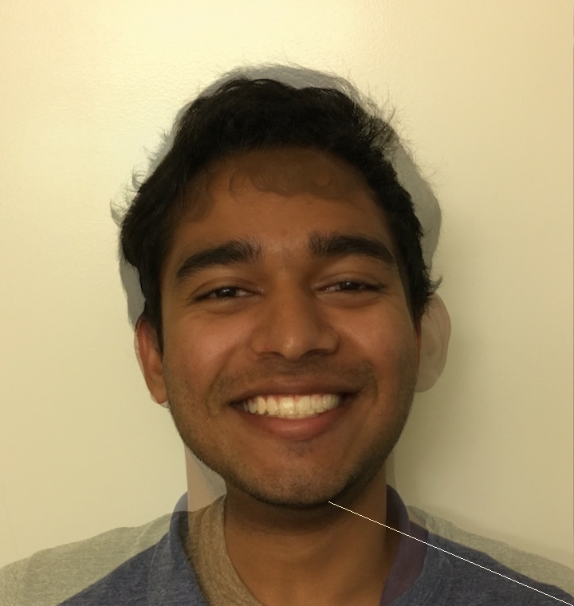
Mathuriakose - Morph Sequence
As seen here, all of these turned out pretty well! One odd part was Nik's neck, which was significantly wider than mine. Because his was bigger, it looked odd during the morph since there is a lot of space to cover in between for the morph. Another issue was the triangulation, which caused a line on the bottom right. Otherwise, the morph turned out pretty well!
Obama and Person
Let's do one more example before moving on!
Obama - Original
 Person - Original
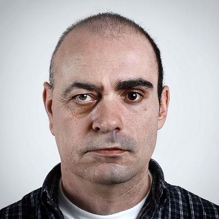
Ooo Person - Morph Sequence
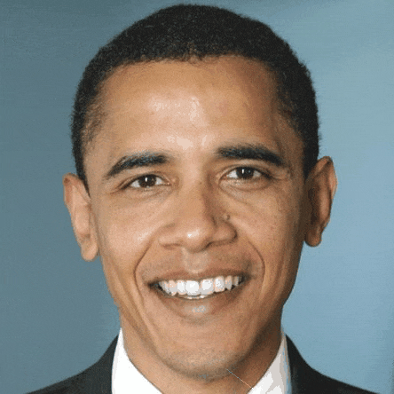
Person - Original
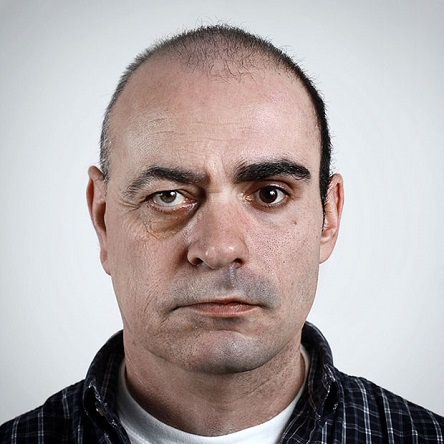
Ooo Person - Morph Sequence
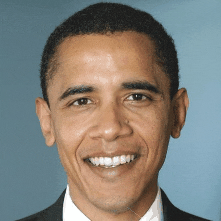
Obama - Original
Person - Original
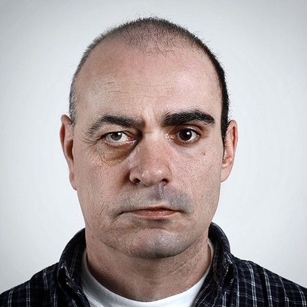
Ooo Person - Morph Sequence
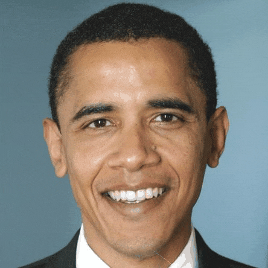
Mean Face of the Brazilian Population
For this portion of the assignment we will be working with the FEI Face Database, which is a Brazilian face database that contains a set of face images taken between June 2005 and March 2006 at the Artificial Intelligence Laboratory of FEI in São Bernardo do Campo.
We will be computing the the average face shape of all 100 faces given to the research project. After that, we will morph 2 of the faces in the dataset into the average shape and see what that looks like. And lastly, we'll see how it looks when my face is warped into the average face and visa-versa. We first have to calculate the average shape of the face. This is done by calculating the average shape and then selecting the corresponding points. Next we show our average face of the Brazilian population. Average Face of the Brazilian Population 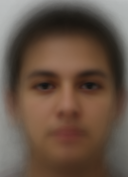 Person 1 Shaped to Average Shape 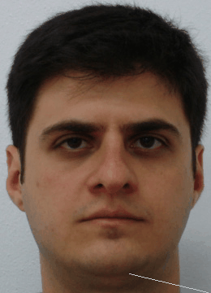 Person 2 Shaped to Average Shape 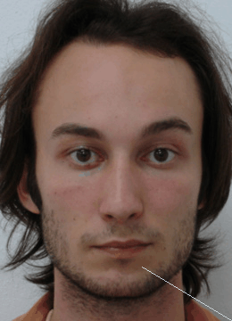 Me Shaped to Average Shape and Back 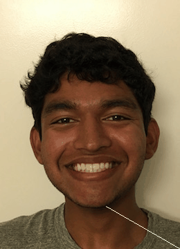
As we can see here, the average face of the Brazilian population have very large eyes (wide too), and defined eyebrows. When we run the app on the two people provided, we can see a definite change, but not too much as they are pretty close to the average. Compared to the output with me on the average shape, it comes out as more of a drastic change as I have less similar features to the Brazilian population.
We will be computing the the average face shape of all 100 faces given to the research project. After that, we will morph 2 of the faces in the dataset into the average shape and see what that looks like. And lastly, we'll see how it looks when my face is warped into the average face and visa-versa. We first have to calculate the average shape of the face. This is done by calculating the average shape and then selecting the corresponding points. Next we show our average face of the Brazilian population. Average Face of the Brazilian Population 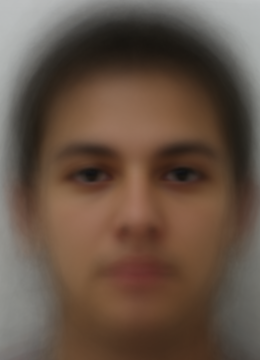 Person 1 Shaped to Average Shape 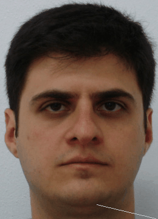 Person 2 Shaped to Average Shape 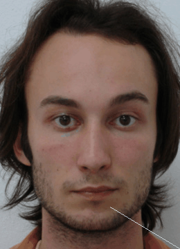 Me Shaped to Average Shape and Back 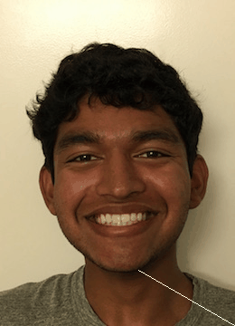
As we can see here, the average face of the Brazilian population have very large eyes (wide too), and defined eyebrows. When we run the app on the two people provided, we can see a definite change, but not too much as they are pretty close to the average. Compared to the output with me on the average shape, it comes out as more of a drastic change as I have less similar features to the Brazilian population.
Caricature of Me and Brazilian Population
The main point I drew from the Brazilian population was the bigger eyes. I decided to go crazy and change the alpha value to a higher value whilst at the same time changing the warp to extend to a larger size, thus giving me fish eyes! This was super fun.
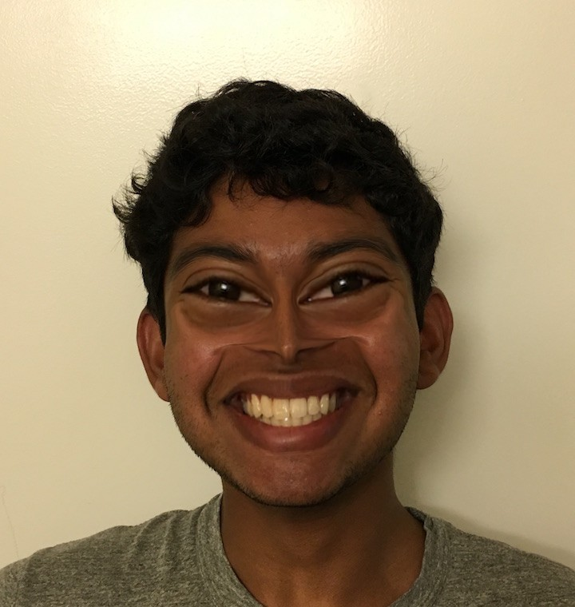
Bells and Whistles 1: Music Video Morph with Roommates!
My roommates were super excited about this project so I decided to morph all of us together!
Bells and Whistles 2: Morph with Classmates
We have collaborated to morph the class together. I contributed by creating the morph from my face to Michael Ambrose. Jiang Guo will combine these GIFs, and upload a video on Sunday. Please check Piazza for the uploaded video.
Conclusion
This was a super fun project that allowed me to learn about triangulation and how morphing works! So far I would say that this is the best project I have done in CS 194-26. Now I understand how companies such as Snapchat do their live photo filter, in order to morph our faces into their weird filters. Cool stuff!